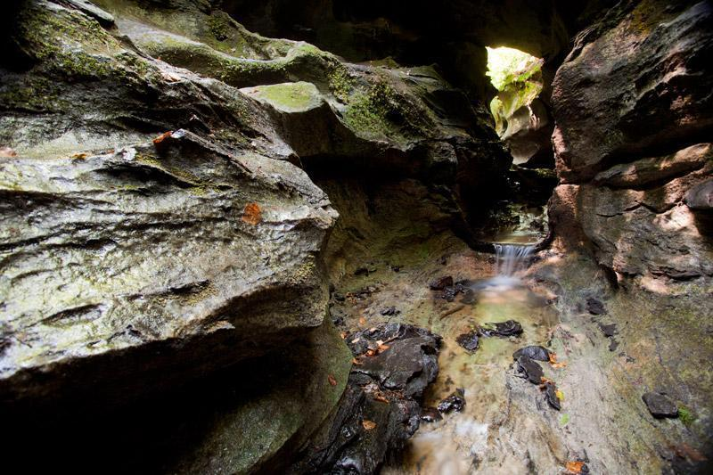
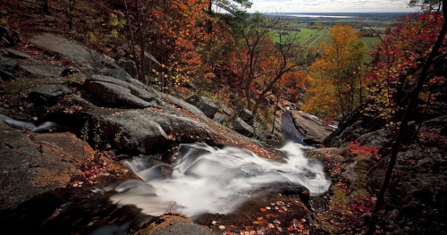
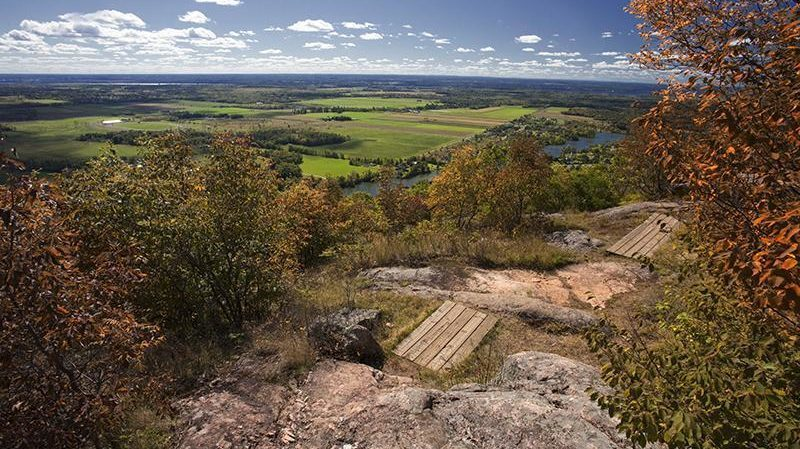
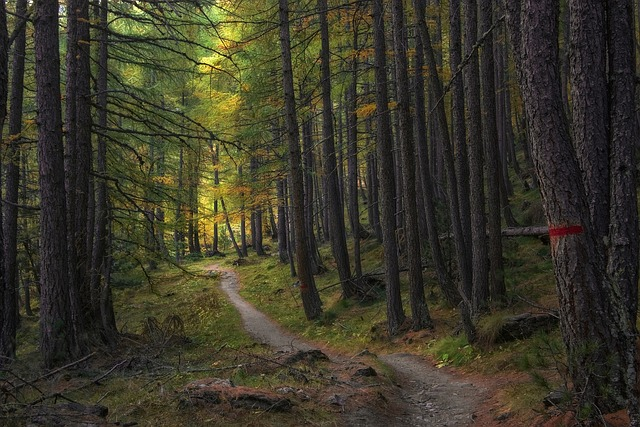
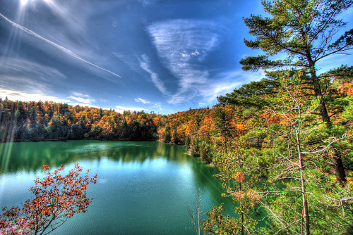
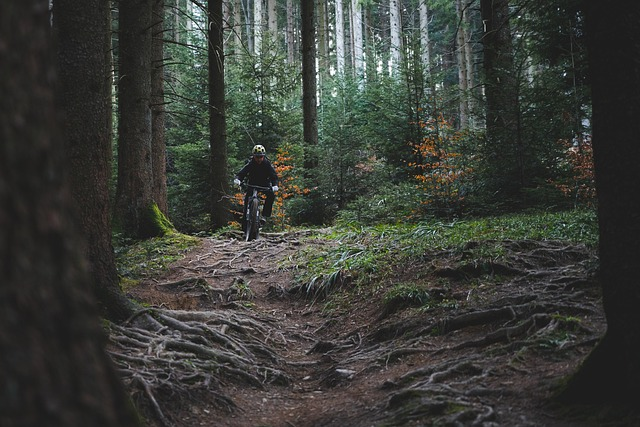

Discover the Charms of Meech Creek Valley Trail
Immerse yourself in the captivating beauty of Meech Creek Valley with our guided running and hiking tours. Traverse through lush trails, breathe in the crisp, invigorating air, and behold the stunning vistas that this picturesque valley has to offer. Whether you prefer the thrill of running or the tranquility of hiking, let us guide you through an unforgettable exploration of Meech Creek Valley's natural wonders.
Book now!
Adventure into Lusk Caves' Mysterious Realm
Discover the hidden wonders of Lusk Caves in Gatineau Park with our guided tours. Equipped with top-of-the-line safety gear provided by us, delve into the mysteries of these breathtaking caves. Traverse through narrow passages, marvel at the stunning rock formations, and experience an adventure like no other. Let us take care of your safety while you uncover the secrets of Lusk Caves.
Book now!
Discover the Wonder of Luskville Falls Trail
Embark on an unforgettable journey to Luskville Falls in Gatineau Park. Join our expert guides on a mesmerizing hiking or running tour through lush forests, scenic pathways, and the awe-inspiring Luskville Falls. Explore the wonders of nature, breathe in the fresh air, and experience an adventure that will leave you invigorated and inspired.
Book now!
King Mountain's Majestic Trails
Embark on an exhilarating journey to King Mountain, an iconic gem nestled within the heart of Gatineau Park. Prepare to be mesmerized by the panoramic views of lush forests, rolling hills, and the meandering Gatineau River. Our guided tours offer an immersive experience, allowing you to discover the rich history and diverse wildlife that call King Mountain home. Get ready to conquer its trails and witness nature's grandeur from one of the park's most majestic peaks.
Book now!
Conquer Wolf Trail
Calling all adventurers! Brace yourself for an exhilarating journey on the renowned Wolf Trail. Test your limits as you traverse this challenging hiking path, surrounded by awe-inspiring natural beauty at every turn. Experience the thrill of conquering rugged terrain, picturesque vistas, and the untamed spirit of the Wolf Trail. Are you up for the challenge?
Book now!
Serene Beauty Revealed: Explore the Wonders of Pink Lake
Immerse yourself in the captivating beauty of the Pink Lake Trail. Meander through this picturesque route, featuring panoramic views and natural wonders that will leave you breathless. While stairs add a touch of excitement, the trail caters to all levels of hikers, promising a serene and awe-inspiring journey. Discover the tranquility of Pink Lake, nestled amidst the stunning landscapes of Gatineau Park.
Book now!
Gatineau Park's Mountain Biking Escapades
Explore Gatineau Park's breathtaking trails with our guided Mountain Biking tours. Tailored for all skill levels, from beginners to seasoned riders, our expert guides lead thrilling adventures on popular trails. Discover the beauty of the park while conquering exciting terrains. Get ready to experience the ultimate mountain biking thrill!
Book now!
Culinary Delights Amidst Nature's Beauty
Enhance your adventure with our optional gourmet local dinner and creative snacks. Treat yourself to a culinary journey amidst the stunning landscapes of Gatineau Park. Opt for this delightful add-on and savor the finest regional flavors, perfectly complementing your exploration of nature's wonders.
Book now!